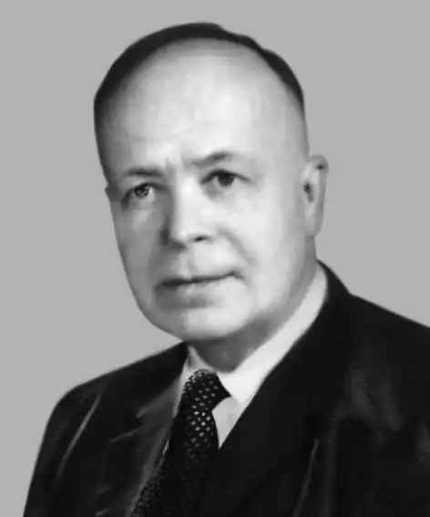

Григорій Костюк народився 25 жовтня 1902 року в селі Боришківці, нині Кам'янець-Подільський район, Хмельницька область. Середню освіту здобув у Кам'янці-Подільському. У 1929 році закінчив Київський інститут народної освіти, потім аспірантуру інституту імені Тараса Шевченка НАН України в Харкові, захистив кандидатську дисертацію.
Викладав історію української літератури в Харківському педагогічному інституті професійної освіти, від початку 1934 року — у Луганському інституті народної освіти.
У листопаді 1934 року його звільнено "за націоналістичні прояви в лекціях" та "перекручування програми". 25 листопада 1935 року заарештовано у Києві. Постановою Особливої наради при НКВС від 3 липня 1936 року заслано на 5 років у концтабір у Воркуті. Григорій Костюк був звільнений 25 листопада 1940 року, та згідно з приписом НКВС оселився у Слов'янську. Влітку 1941 року одружився з Раїсою Бутко. Від грудня 1940 року до липня 1944 року жив і працював (здебільшого не за фахом) у Слов'янську, Києві, Львові. У липні 1944 року емігрував на Захід. В еміграції був одним із засновників та деякий час лідером Української революційно-демократичної партії, після її розколу належав до лівого крила (групи "Вперед"). До 1951 року — у таборах для "переміщених осіб" в Німеччині. У лютому 1952 року виїхав до США, де працював у Дослідному центрі Колумбійського університету та інших установах. Григорій Костюк був ініціатором створення ОУП "Слово" та першим його головою (1954—1975). У 1959–1964 роках очолював Мистецьку комісію Комітету з побудови пам'ятника Тарасові Шевченку у Вашингтоні. Григорій Костюк був реабілітований 22 червня 1989 року. 23 жовтня 1992 року в Боришківцях відбувся вечір, присвячений 90-річчю Костюка. На вечорі виступив його син — Теодор Костюк — доктор фізико-астрономічних наук. 4 червня 2008 року видавництво "Смолоскип" провело в Києві презентацію двотомника спогадів Григорія Костюка "Зустрічі і прощання", вперше перевиданого в Україні. Григорій Костюк помер 2002 року в місті Сільвер-Спрінґ, штат Мериленд. Поховано на українському православному цвинтарі святого Андрія у Бавнд-Бруку, штат Нью-Джерсі.